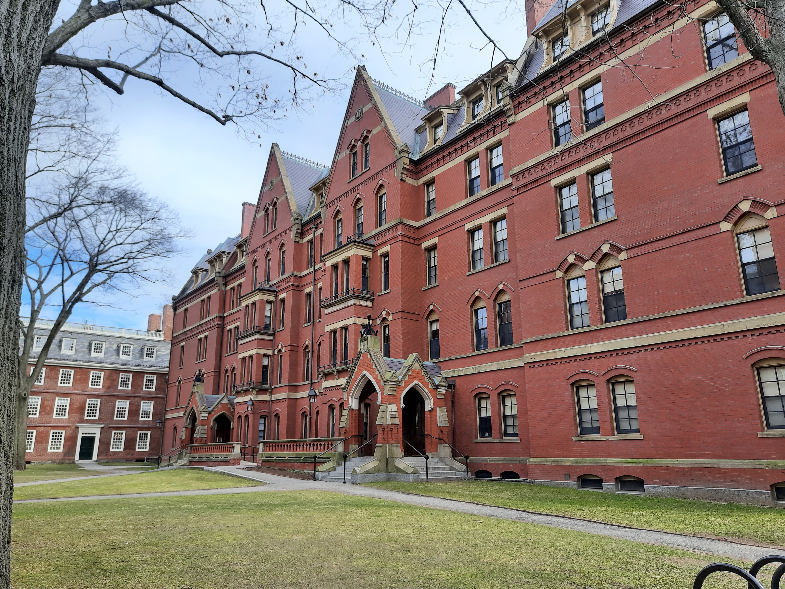
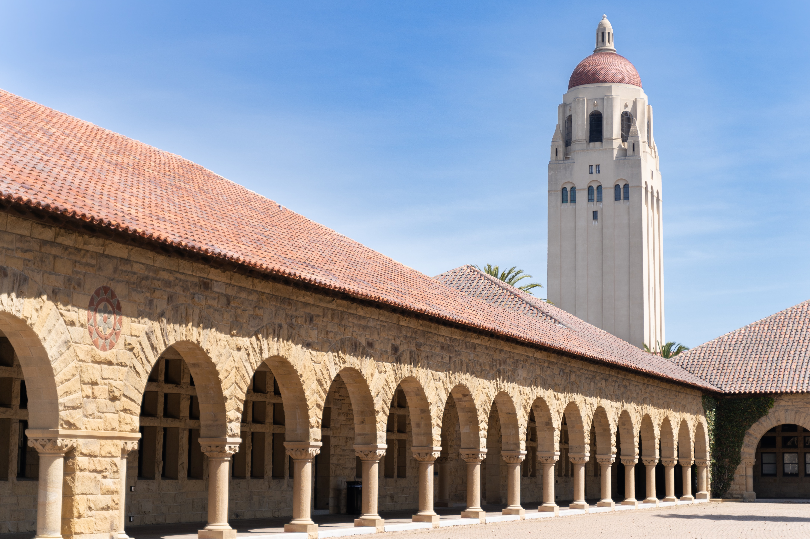
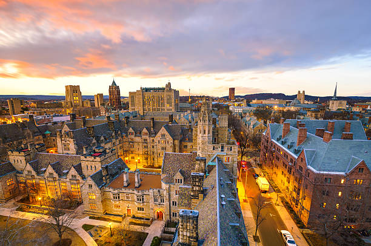
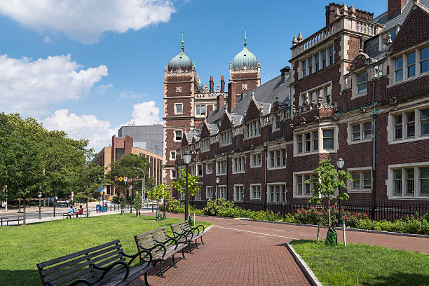
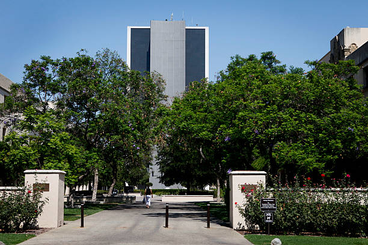
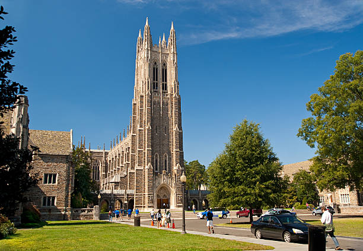

Princeton University
Princeton University, nestled in the heart of New Jerseyhas been consistently recognized as a world-class institution, securing the top spot in the US News Rankings for a remarkable decade.
Princeton University is unique in combining the strengths of a major research university with the qualities of an outstanding liberal arts college. Whether through independent study, student-initiated seminars, or lectures in emerging fields such as neuroscience, Princeton students have the flexibility to shape dynamic academic programs that prepare them for leadership and lives of service. Through its groundbreaking financial aid program, Princeton ensures that all qualified students who are accepted can afford to attend the University.
Princeton University is a private institution that was founded in 1746. It has a total undergraduate enrollment of 5,604 (fall 2022), its setting is suburban, and the campus size is 690 acres. It utilizes a semester-based academic calendar.
Its faculty are known throughout the world and it is not unusual for students to learn from Nobel laureates, Pulitzer Prize winners, and MacArthur fellows. Students benefit from small class sizes and one-on-one advising with faculty, particularly while doing independent work such as the senior thesis. All intellectual endeavors of Princeton's 5,150 degree-seeking undergraduate students are supported by a range of first-rate academic resources, such as libraries, laboratories, and even an art museum. The academic options at Princeton give students flexibility in pursuing their intellectual interests while working toward either the Bachelor of Arts or the Bachelor of Science in Engineering. Students also may choose from among 46 interdisciplinary programs, creating combinations of academic interests. For example, a student might major in physics while also earning a certificate in Latin American studies. The University is located in the town of Princeton, which has a diverse population of 30,000 residents and is situated between New York City and Philadelphia, with rail service to both cities. Princeton is a residential university that provides a welcoming environment, advising services, cultural and educational events, intramural sports, and more. As a residential community, Princeton provides housing for all four years. Princeton's six residential colleges offer settings where students quickly can become involved in campus activities. Students can participate in more than 250 student-run organizations, the arts, civic engagement, student government, religious groups, and athletics.

Massachusetts Institute of Technology
Massachusetts Institute of Technology is a private institution that was founded in 1861. It has a total undergraduate enrollment of 4,657 (fall 2022), its setting is urban, and the campus size is 168 acres. It utilizes a 4-1-4-based academic calendar. Massachusetts Institute of Technology's ranking in the 2024 edition of Best Colleges is National Universities, #2.
The essence of MIT is our appetite for problems-especially those big, intractable, complicated problems whose solutions make a permanent difference. While MIT is a research university committed to world-class inquiry in math, science, and engineering, MIT has equally distinguished programs in the architecture, the humanities, management, and the social sciences. A diverse, supportive campus environment-with an incredible range of student groups and athletic and fitness opportunities-ensures that it's not all about the work. And in MIT's intensely creative atmosphere, the arts flourish in all their forms.
MIT admits some of the most talented students in the world on a need-blind basis. The Institute is committed to meeting the financial need of each admitted undergraduate student through MIT scholarships; the average student scholarship was $31,926 per year in 2011. As a result, the MIT community is incredibly diverse, and organically collaborative, with students coming from many different backgrounds, across the country and around the world.
Students are frequently encouraged to unite MIT's engineering excellence with public service. For example, the required senior capstone design course for mechanical engineering majors centers on making the world a better place through engineering. Recent years have focused on projects using alternative forms of energy, and machines that could be used for sustainable agriculture. Beyond academic coursework, MIT's D-Lab, Poverty Action Lab, and Public Service Center all support students and professors in the research and implementation of culturally sensitive and environmentally responsible technologies and programs that alleviate poverty and improve quality of life in low-income areas locally, nationally, and worldwide.
The MIT community brings its energy and creativity outside the classroom as well with 400+ student-run groups, 33 varsity sports, 20 intramural sports, 30 club sports, and over 500 arts-related events on campus each year. Campus is just a short walk across the Charles River to Boston where students can enjoy the city's fabulous restaurants or take in Boston culture. Many programs around MIT allow students to get reduced-price tickets to various events, including the Boston Symphony Orchestra, the American Repertory Theater, and Bruins, Celtics, and Red Sox games. Students get free admission daily to the Museum of Science, the Museum of Fine Arts, and all Harvard University and MIT museums.

Harvard University
Harvard University is a private institution that was founded in 1636. It has a total undergraduate enrollment of 7,240 (fall 2022), and the campus size is 5,076 acres. It utilizes a semester-based academic calendar. Harvard University's ranking in the 2024 edition of Best Colleges is National Universities, #3.
Harvard is located in Cambridge, Massachusetts, just outside of Boston. Harvard’s extensive library system houses the oldest collection in the United States and the largest private collection in the world.
There is more to the school than endless stacks, though: Harvard’s athletic teams compete in the Ivy League, and every football season ends with "The Game," an annual matchup between storied rivals Harvard and Yale. At Harvard, on—campus residential housing is an integral part of student life. Freshmen live around the Harvard Yard at the center of campus, after which they are placed in one of 12 undergraduate houses for their remaining three years. Although they are no longer recognized by the university as official student groups, the eight all-male "final clubs" serve as social organizations for some undergraduate students; Harvard also has five female clubs.
In addition to the College, Harvard is comprised of 13 other schools and institutes, including the top-ranked Business School and Medical School and the highly ranked Graduate Education School, School of Engineering and Applied Sciences, Law School, and John F. Kennedy School of Government. Eight U.S. presidents graduated from Harvard College, including Franklin Delano Roosevelt and John F. Kennedy. Other notable alumni include Henry David Thoreau, Helen Keller, Yo-Yo Ma, and Tommy Lee Jones. In 1977, Harvard signed an agreement with sister institute Radcliffe College, uniting them in an educational partnership serving male and female students, although they did not officially merge until 1999. Harvard also has the largest endowment of any school in the world.

Stanford University
Stanford University is a private institution that was founded in 1885. It has a total undergraduate enrollment of 8,049 (fall 2022), its setting is suburban, and the campus size is 8,180 acres. It utilizes a quarter-based academic calendar. Stanford University's ranking in the 2024 edition of Best Colleges is National Universities, #3.
In 1885, Jane and Leland Stanford established Stanford University in memory of their son. Their intent was to establish a "University of high degree" that would "qualify students for personal success and direct usefulness in life and promote the public welfare by exercising an influence on behalf of humanity and civilization." Today, Stanford is a research university where teaching, learning and research are all integral to the university's mission. Stanford values close interaction between undergraduates and faculty. Student participation in research is strongly supported.
Stanford's entrepreneurial character draws from its Western location and the legacy of its founders. Academic excellence crosses disciplines, ranging from humanities to social sciences to engineering and the sciences. Stanford emphasizes multidisciplinary approaches to teaching and research and has established university-wide initiatives to address worldwide problems in human health, the environment, international affairs and K-12 education. Current faculty have 17 Nobels and 4 Pulitzers. Students, distinguished by initiative, love of learning and commitment to public service, are talented in many areas, including academics, art, music and athletics. Stanford's athletic teams, called the Cardinal, have won the Director's Cup as the best program nationwide 17 years in a row. Stanford's extraordinary campus is located in a dynamic and diverse area between San Francisco and San Jose in Northern California. The campus is considered among the most beautiful anywhere. The Bing Overseas Studies Program has offerings in 12 countries, and other Stanford programs take students to the Hopkins Marine Laboratory on Monterey Bay and to Washington D.C.

Yale University
Yale University is a private institution that was founded in 1701. It has a total undergraduate enrollment of 6,645 (fall 2022), its setting is city, and the campus size is 373 acres. It utilizes a semester-based academic calendar. Yale University's ranking in the 2024 edition of Best Colleges is National Universities, #5.
Yale is both a small college and a large research university. The College is surrounded by thirteen distinguished graduate and professional schools, and its students partake in the intellectual stimulation and excitement of a major international center of learning. The faculty is known for its special devotion to undergraduate teaching. Many of Yale's most distinguished senior professors teach introductory courses as well as advanced seminars to undergraduates. Faculty members are accessible to students and take a great deal of interest in working closely with undergraduates. Yale's curriculum allows students to achieve both breadth and specialization across several disciplines, including six engineering disciplines. In addition to probing a major field in depth, students are expected to explore three important areas of knowledge - the humanities and arts, social sciences, and natural sciences. While exploring several subject areas, students are also expected to sharpen their writing, quantitative, and foreign language skills.
Yale's unique residential college system organizes the student body into twelve small communities where students live, eat, socialize, and pursue academic and extracurricular activities. Before arriving as a freshman each student is randomly assigned to one of the colleges, giving students a built-in community from the moment they arrive. Most Yale students become convinced that their residential college is the best residential college. Each college is home to a microcosm of our undergraduate student body as a whole, and allows students to have the cohesiveness and intimacy of a small school while still enjoying the vibrancy and resources of a world-class university.
Yale students are actively involved in the New Haven community, benefiting from and enhancing the city's many cultural, recreational, and political opportunities. New Haven boasts diverse and abundant resources in the arts. There is a vibrant cultural and artistic life in the city, a myriad of opportunities both academic and social, and a remarkable choice of places to eat. New Haven is part of a Yale education: the experience of contemporary urban life broadens students' perspectives and helps prepare them for life after college.
Yale students have a long tradition of intense involvement with extracurricular activity. There are more than 450 active organizations on campus, ranging from the Undergraduate Math Society to the Yale Hunger and Homelessness Action Project, and including 50 performance groups and 60 cultural associations. This enormous range of opportunities endows Yale College with a palpable energy and spirit of commitment.
But perhaps the first thing that students notice about their college is the caliber of their fellow students. There are extraordinary artists, student government leaders, star athletes, passionate activists, award-winning poets, prize-winning scientists, and people who are just simply "well-rounded." Because Yale students come from such a wide range of ethnic, religious, cultural, geographic and socioeconomic backgrounds, there is a remarkable exchange of ideas. Yale is a major research university that focuses primarily on undergraduate education and encourages students to become leaders of their generation in whatever they wish to pursue.

University of Pensylvania
University of Pennsylvania is a private institution that was founded in 1740. It has a total undergraduate enrollment of 9,760 (fall 2022), its setting is urban, and the campus size is 299 acres. It utilizes a semester-based academic calendar. University of Pennsylvania's ranking in the 2024 edition of Best Colleges is National Universities, #6.
Inspired by the intellectual audacity and educational ideals of our founder, Benjamin Franklin, the University of Pennsylvania (Penn) offers a compelling mixture of world-class liberal arts coursework and pre-professional education. Students apply to one of four undergraduate schools---Arts and Sciences, Nursing, Engineering and Applied Science, or Wharton. Penn also offers an array of exciting interdisciplinary programs and courses which leverage the resources of different departments or schools, such as the Fisher Program in Management and Technology, the Huntsman Program in International Studies and Business, and the Vagelos Program in Life Sciences and Management.
Students are strongly encouraged to engage the world beyond Penn, both locally and globally. Civic House provides a "hub" for students interested in all kinds of community service while the Center for Community Partnerships coordinates over 150 Academically Based Community Service courses each term which link theory and practice through activities that make a significant difference in West Philadelphia and the City. Opportunities for global engagement include Penn Abroad, through which more than 600 Penn undergraduates each year spend a semester or longer abroad, more than any other Ivy League school. Nearly 15% of our undergraduates come to Penn from other countries, providing a linguistically and culturally diverse environment.
As one of the world's premier research universities, Penn offers students the opportunity to learn by participating in the hands-on creation of new knowledge. The Center for Undergraduate Research, the Kelly Writers House, the Weiss Tech House, and the Penn Museum are places that connect undergraduates to leading researchers at Penn and to the cutting-edge ideas of its laboratories and seminar rooms. The academic experience at Penn is integrated with social and extra-curricular life. Almost all first-year students reside within the eleven College Houses at Penn, which link intellectual and social experiences through close contact with faculty-in-residence and student resident assistants. Penn has over 300 student groups ranging from political action to performing arts to sports clubs to student publications offering all students opportunities to pursue a wide-range of interests.
Such opportunities extend beyond campus to the City of Philadelphia where students can experience the rich cultural, athletic, social, and political life of America's most historic city. Today Ben Franklin would marvel at the intellectual and social excitement of the diverse and dynamic institution he founded.

California Institute of Technology
California Institute of Technology is a private institution that was founded in 1891. It has a total undergraduate enrollment of 982 (fall 2022), its setting is suburban, and the campus size is 124 acres. It utilizes a quarter-based academic calendar. California Institute of Technology's ranking in the 2024 edition of Best Colleges is National Universities, #7.
The California Institute of Technology (Caltech) is one of the world's leading science and technology research institutions. Our 300 faculty members, 1,200 graduate students, and 1,000 undergraduates expand human knowledge and advance society through bold, collaborative explorations and creative, intensive scholarship in fundamental and applied sciences, and engineering. "What makes Caltech unique," says President Jean-Lou Chameau, "is our focus-on education, on science and engineering, but most of all, on giving everyone at the Institute the means and flexibility to pursue his or her best ideas."
Caltech students are some of the brightest minds from around the world. Our students hail from 49 states and 62 different countries, and 98% of our students placed in the top tenth of their graduating classes. Though the admissions process is competitive--only 13% of applicants receive offers of acceptance--the Institute is committed to making a Caltech education accessible to all students. More than 50% of students receive need-based assistance, the average need-based financial aid package is worth nearly $35,000, and the average need-based scholarship totals more than $30,000.
The Institute operates advanced research facilities on its campus and oversees an international network of astronomical observatories, the seismological laboratory, and NASA's Jet Propulsion Laboratory (JPL). Caltech scientists have accelerated scientific discovery and launched new fields in molecular biology, geochemistry, and aerospace. Our faculty have earned 32 Nobel Prizes, 10 National Medals of Technology, 56 National Medals of Science, and 110 memberships in the National Academies. Through the Caltech Office of Technology Transfer, our faculty obtain nearly 140 patents annually, and our students and faculty have started more than 80 companies since 1995.
The Caltech campus is located in the city of Pasadena, just 10 miles from Los Angeles, with access to regional and commercial industrial centers, government agencies, and educational and cultural institutions. Student life at Caltech revolves around the eight campus Houses, which revel in their distinct personalities and unique traditions, including a long history of elaborate pranks carried off around the country. Caltech students can participate in more than 150 clubs that celebrate a wide range of interests or compete in 17 NCAA Division III-level varsity sports. The Honor Code governs life at Caltech, affording students such privileges as take-home tests, permission to collaborate on assignments, and keys to campus buildings.

Duke University
Duke University is a private institution that was founded in 1838. It has a total undergraduate enrollment of 6,640 (fall 2022), and the campus size is 8,693 acres. It utilizes a semester-based academic calendar. Duke University's ranking in the 2024 edition of Best Colleges is National Universities, #7.
Duke University offers a unique and compelling combination of academic achievement, engagement with society, and athletic accomplishment at the highest levels. A private comprehensive teaching and research university, Duke traces its roots to 1838, officially becoming Duke University in 1924. In addition to liberal arts and engineering education at the undergraduate level, Duke offers graduate and professional study in arts and sciences, business, divinity, engineering, the environment, law, public policy, medicine, and nursing. At the same time, Duke is an intimate setting, with 6,800 undergraduates and an additional 6,000 graduate and professional students.
Duke is a global university with students and faculty from nearly every country. We encourage students to go abroad to study, perform service and conduct research. About half of Duke's graduating class spends at least a semester in another country - one of the highest percentages of any of the nation's top private research universities. We offer instruction in 25 foreign languages. One of our most popular programs is DukeEngage, which supports undergraduates who want to pursue an immersive service experience in the U.S. or abroad.
Duke is characterized by innovation, entrepreneurship, energy and ambition. Duke students have an unusually wide range of opportunities available to them and freedom in choosing the academic path that best meets their needs. Duke students are encouraged to make a difference, to experiment with ideas and organizations and they are challenged to become engaged with society's problems and solutions.
Our students spend four years on one of the most beautiful campuses in America -- soaring Gothic buildings, modern teaching and research facilities, lush botanical gardens, and accessible athletics and recreational spaces. Duke's home of Durham is a historic tobacco and textile hub that has emerged as the heart of North Carolina's hi-tech Research Triangle, and is consistently recognized as one of the most desirable and vibrant places to live in the country. Durham's arts, culture, recreation and restaurants have earned a national following, and the region provides numerous opportunities for post-graduate employment.
Duke students exhibit legendary passion and enthusiasm. Duke's athletic program is regularly ranked among the nation's strongest and most competitive, with some of the country's most talented scholar-athletes and dedicated fans: the Cameron Crazies. A member of the Atlantic Coast Conference, Duke has thirteen men's varsity teams and thirteen women's varsity teams as well as numerous intramural, recreational, and club sports. Duke consistently leads the ACC in Academic Honor Roll students and is a top producer of Academic All Americans.
The residential experience is an important component of a Duke education. About 85 percent of all undergraduates live on campus. First-year students live together on East Campus, where about a quarter of them participate in FOCUS, a living/learning program organized around academic themes, which gives them immediate access to faculty mentoring and a smaller community of students they get to know well.
With the rigorous academics, the plethora of social and artistic activities, the immersive service and cultural opportunities and the occasional basketball game in Cameron Indoor Stadium, the most important things students need to bring with them to Duke are energy and intellectual curiosity.

Brown University
Brown University is a private institution that was founded in 1764. It has a total undergraduate enrollment of 7,639 (fall 2022), its setting is city, and the campus size is 146 acres. It utilizes a semester-based academic calendar. Brown University's ranking in the 2024 edition of Best Colleges is National Universities, #9.
Brown is the only major research university in the nation where undergraduates are the architects of their own course of study. The University's signature academic program for undergraduates encourages intellectual exploration and risk taking and fosters rigorous multidisciplinary study in more than 70 concentrations, ranging from Egyptology to Cognitive Neuroscience. Its School of Engineering prepares students for careers that will make a difference by seeking solutions to current problems that challenge our society.
Brown is frequently recognized for its global reach, many cultural events, numerous campus groups and activities, active community service programs, highly competitive athletics, and beautiful facilities located in a richly historic urban setting. Brown students are distinguished by their academic excellence, creativity, self-direction, leadership, and collaborative style of learning, while Brown's outstanding faculty is known for its singular dedication to teaching and research.